Education
Scientific video lectures, hydrologic simulations, and interactive visual materials from RWESL.
🎬 Visualizing DAD Analysis in Hydrology 🌧️💧
A 50-second scientific animation explaining Depth–Area–Duration (DAD) Analysis—a key concept in hydrology for understanding how rainfall depth varies with storm duration and spatial area. The goal is to transform a numerical hydrology concept into a clear, visual, and engaging learning experience.
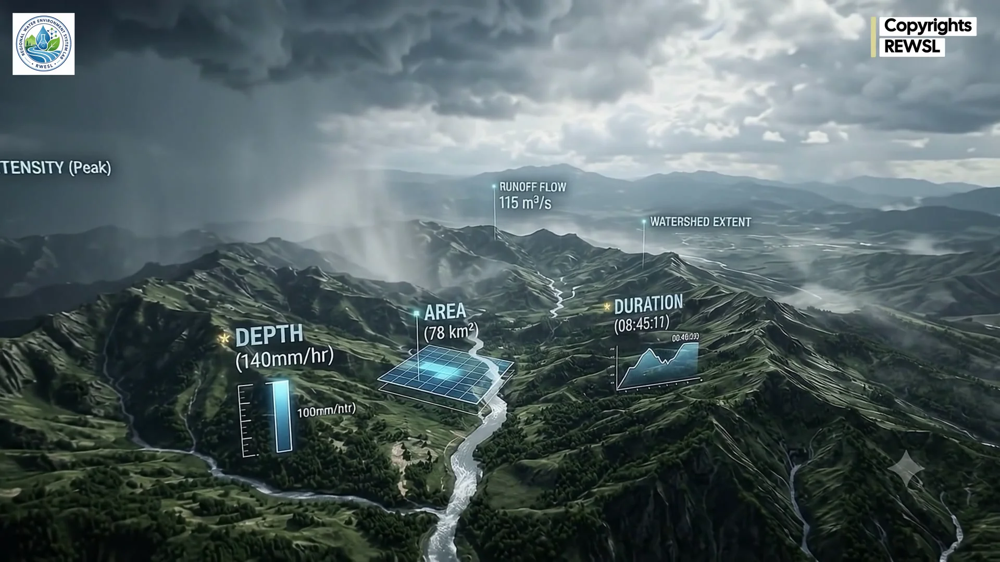
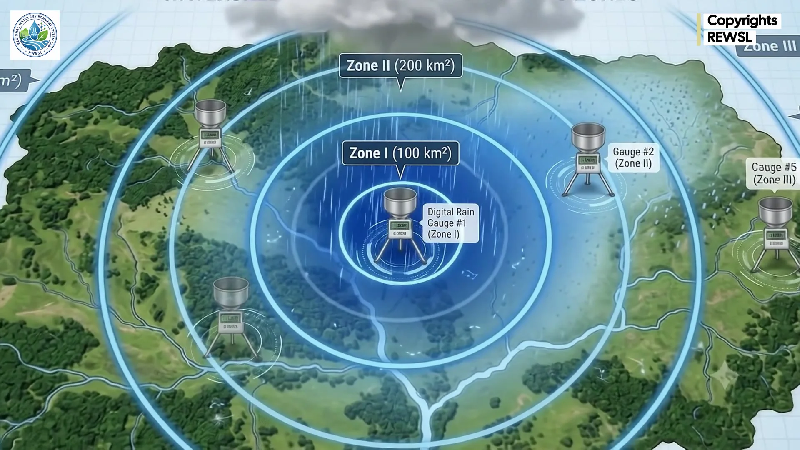
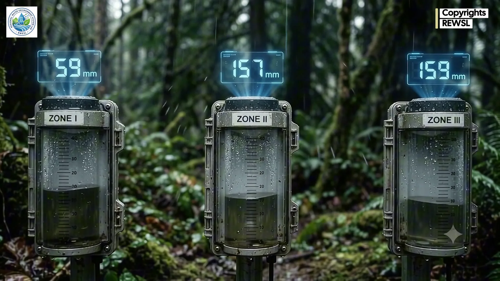
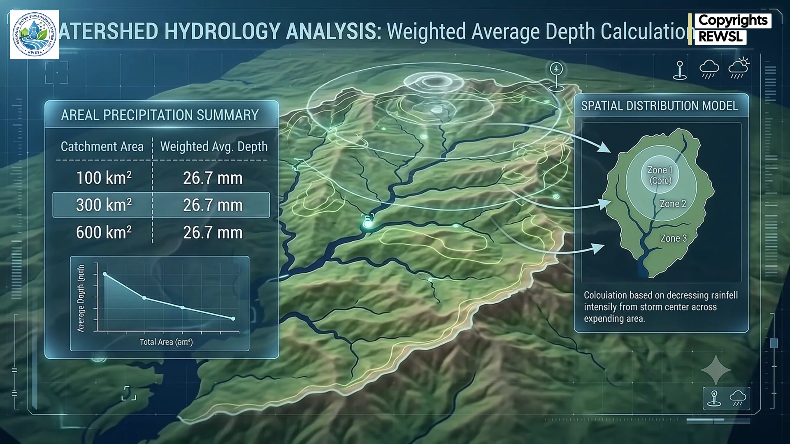
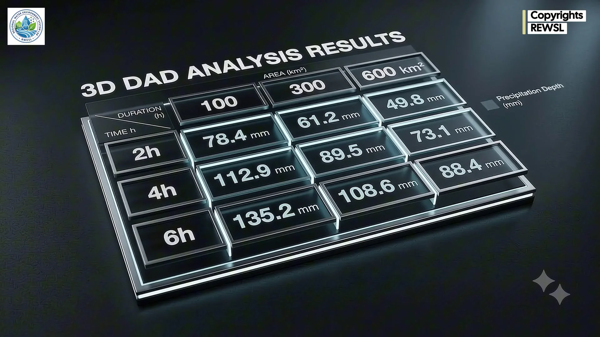
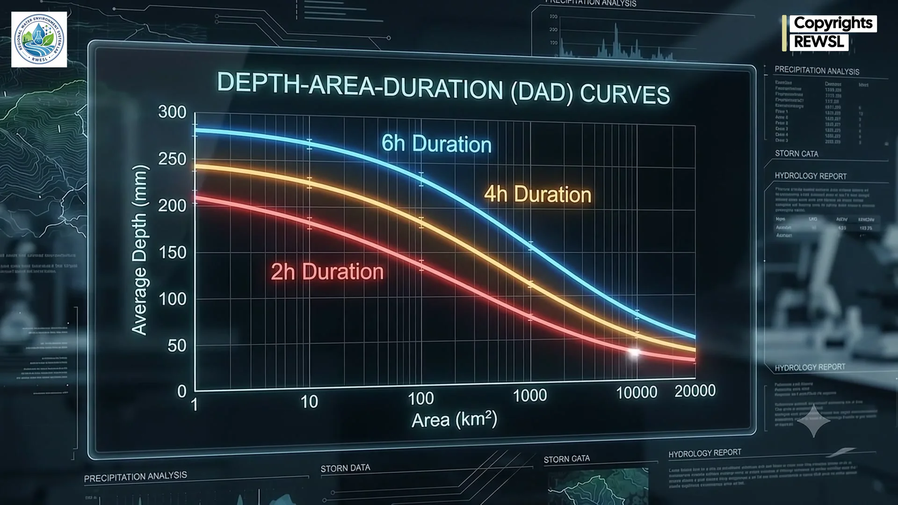
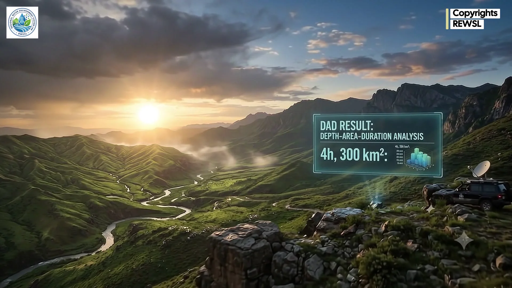
🎬 The Global Water Cycle & Catchment Hydrology 💧🔄
A comprehensive 2-minute 10-second scientific animation produced by RWESL detailing the continuous closed-loop dynamics of the Global Water Cycle. Experience solar-driven Ocean Evaporation, orographic Cloud Formation, telemetric Precipitation, catchment Area-Weighted Rainfall computation, vadose zone Infiltration & Groundwater Aquifer Recharge, and surface Runoff returning to river basins and oceans.
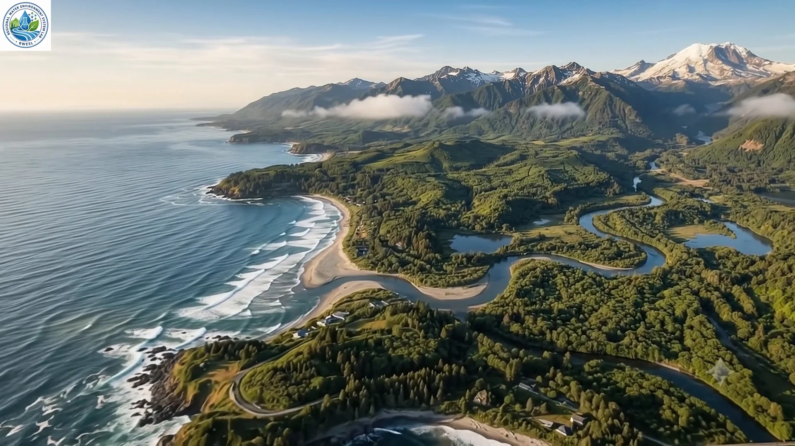
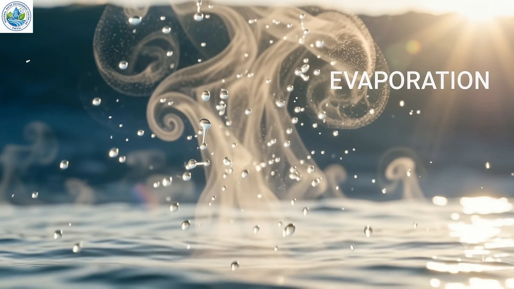
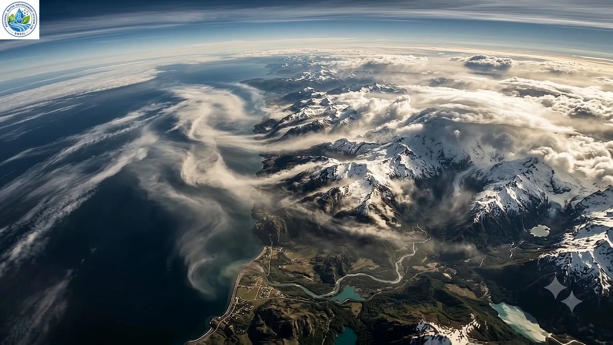
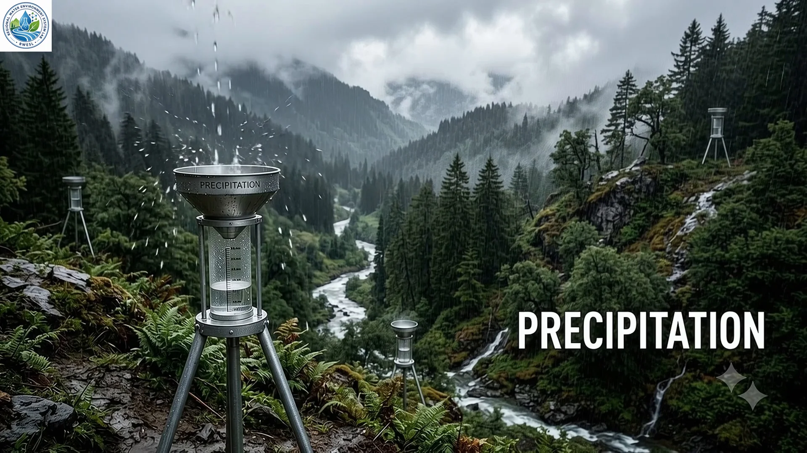
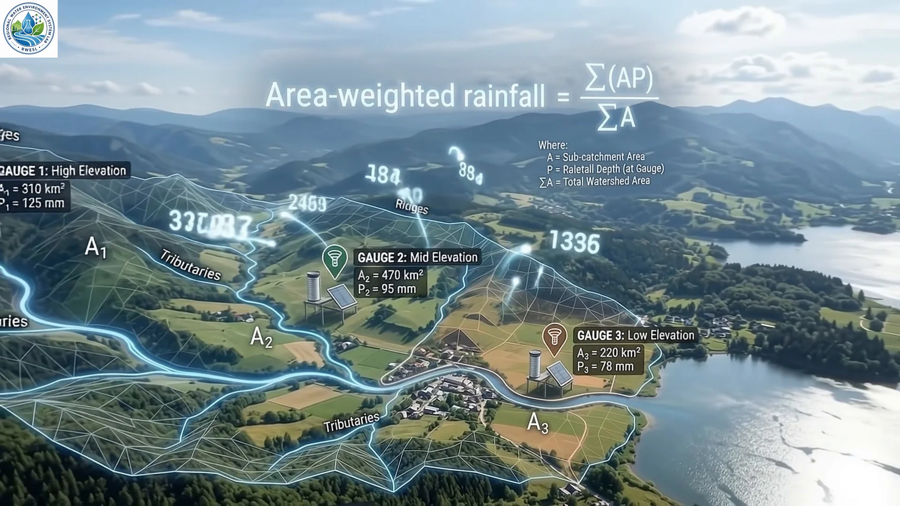
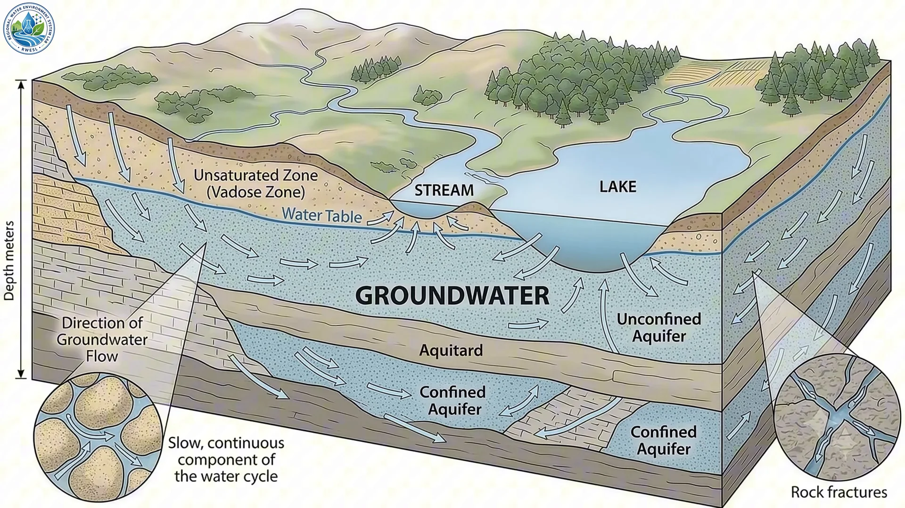
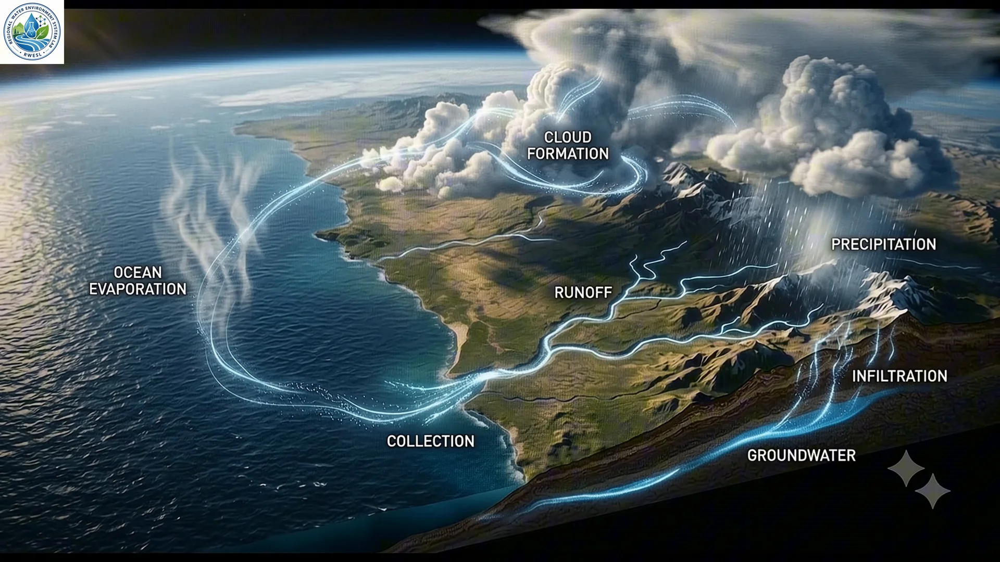